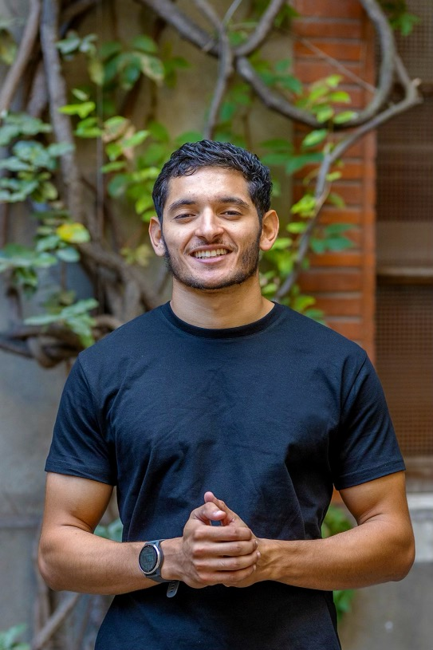

Notre
histoire
SPS est née d'une conviction partagée : le sport peut être une école de paix, de santé et de vivre-ensemble.
Fondation
Création officielle de l'association et structuration de notre vision.
16 mai 2024 · Déclaration de Genève
SPS naît dans le sillage de la Déclaration de Genève pour l'éducation à la culture de paix, proclamée lors de la Journée internationale du vivre-ensemble en paix (JIVEP).
Premières actions
Mai 2025 · Intervention à la MECS Saint-Joseph
Auprès d'un groupe de jeunes en situation difficile : transmission par le jeu des valeurs du faire-ensemble, du respect, de l'équité, du partage et de la considération envers tout un chacun.
Le jeu met en évidence les conflits et la concurrence. C'est là que nous apportons des outils et rappelons l'objectif de l'éducation à la paix, pour semer en chaque jeune cette graine de paix.
Septembre 2025 · Accord avec le collège Claude Nougaro
Signature d'un accord pour intervenir au collège Claude Nougaro.
En collège
Janvier 2026 · Début des interventions
Début des interventions au collège, à travers des ateliers d'éveil et des ateliers sportifs.
Mai 2026 · Course bien-être santé
Mise en place de la course bien-être santé, avec plus de 70 participants pour cette première édition.
Sport Paix Santé est née en 2024 de la conviction profonde que le sport peut être un puissant vecteur de transformation sociale.
Fondée par des passionnés de sport et des citoyens engagés, notre association met ses actions au service de l'autre.
SPS a été fondée à la suite de la Déclaration de Genève pour l'éducation à la culture de paix, élaborée au Palais des Nations (ONU) et proclamée à Genève le 16 mai 2024, lors de la Journée internationale du vivre-ensemble en paix (JIVEP). Ce texte appelle à inscrire l'éducation à la culture de paix dans les programmes scolaires et les apprentissages.
Ce qui a démarré comme une vision partagée s'est rapidement transformé en initiatives tangibles : le sport brise les barrières, crée des liens entre des communautés isolées et offre des alternatives positives orientées vers la santé et le bien-être.
Aujourd'hui, notre approche combine activité physique, éducation à la culture de paix et sensibilisation à la santé, pour un impact direct et mesurable là où nous intervenons.

Nos valeurs
fondamentales
Les principes qui guident chacune de nos actions.
Inclusion
Le sport doit être accessible à tous, sans distinction d'âge, de genre, d'origine ou de capacité physique.
Transparence
Une gestion et des actions transparentes, avec des comptes rendus réguliers à nos partenaires et bénéficiaires.
Excellence
Des programmes fondés sur les meilleures pratiques, dont nous évaluons constamment l'impact.
Innovation
De nouvelles façons, toujours, d'utiliser le sport comme outil de transformation sociale.
Nos
objectifs
Ce que nous nous efforçons d'accomplir chaque jour.
- Créer des espaces sûrs et inclusifs pour la pratique sportive dans les communautés défavorisées
- Former des éducateurs sportifs capables de promouvoir les valeurs de paix et de respect
- Organiser des événements sportifs inter-communautaires favorisant le dialogue et la compréhension mutuelle
- Sensibiliser le public aux dangers de la sédentarité et promouvoir un mode de vie actif
- Développer des partenariats avec les institutions locales et internationales pour amplifier notre impact
Qui sommes-
nous ?
Trois co-présidents, trois parcours complémentaires, une même vision.

Yannis Chouet
Co-Président
Préparateur physique et coach sportif
Louis Mercier
Co-Président
Ingénieur patrimonial
Adjoint aux finances
Dauryann Oillo-Heddar
Co-Président
Doctorant-athlète en droit international du sport (UdeS)
Rejoignez
l'aventure
Bénévole, partenaire ou adhérent : il y a une place pour chacun dans le projet SPS.
Ou écrivez-nous directement : contact.sportpaixsante@gmail.com